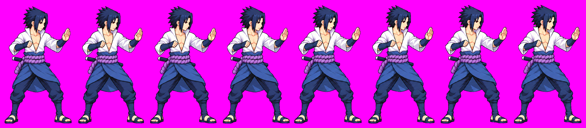
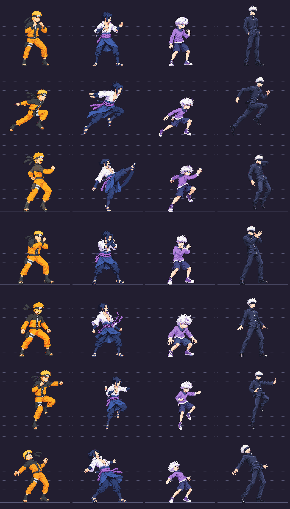
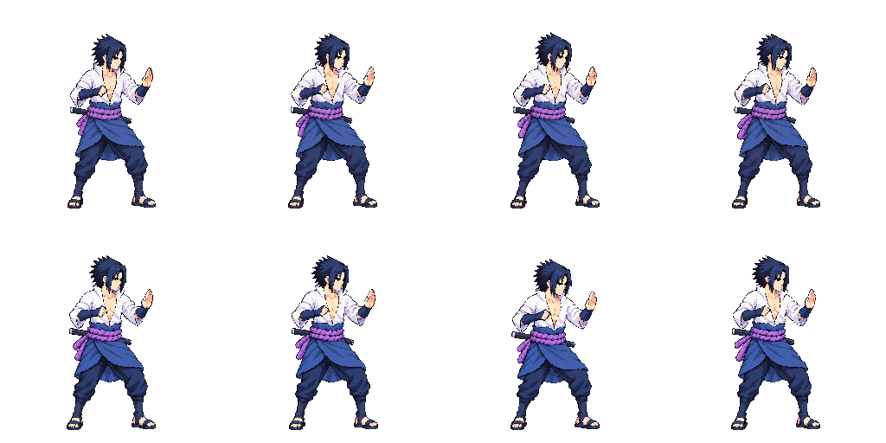
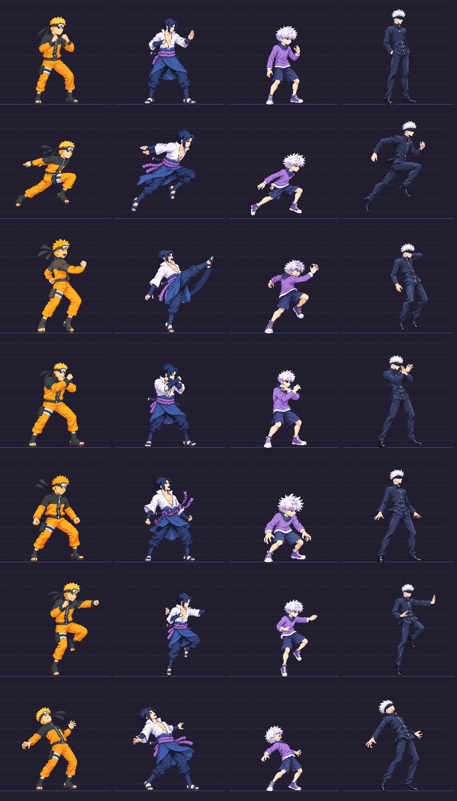
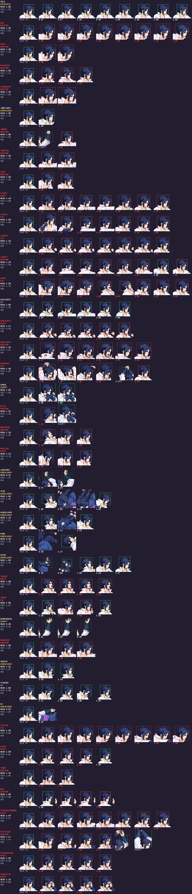

Final A attempt (3 total) and B second attempt. Automatic stitch factor1.0075 (A down0.9926), after B/A1.018. Pack exit0 and48colors, idle verdict ref (not ok). Head variation .985..1.025 =4points within12. Probe head43x42 vsold42x41: target smallerhead not achieved. Manual skull estimate31-32px vs28.57 target; uncertainty from hidden crown. SBR.465 above.45, bodybuild not independently verified. This is an unsuccessful correction candidate, NOT recommended for approval or a new baseline. v03 has smallerhead direction but documented18-20%hairreduction and8pxdip. All later animations remain stopped; fixed idle v01 unchanged. No exemptions. Other approved-strip findings expected.


Model approved; idle candidate only. No later animations started. If accepting deviations: approve sasuke idle v03.
Idle v03 is a measured re-stitch of v02 source parts (A selected from2 attempts; B first attempt). Initial auto factor0.9376 introduced a14px head-height drop; v03 uses factor1.000 based on matching crown-to-chin landmarks A86px/B87px +/-3. Packed head ratios .971,.971,1,.992,1,1.050,1.033,1.029; spread7.9 points below12. Packer exit0,48 colors. Idle verdict is ref by design, NOT ok: self-reference is no anatomical proof. Head/hair probe34x33 vsold42x41 (about18-20% reduction, larger than requestedabout8%). Manual skull estimate28-30px against28.57 target; hair obscures crown. Standing200px remains declared, not independently proven from bent poses. Shoulder band94px SBR.470 exceeds.450 guard proxy; MWR.60 vsold.51; candidate body reads broader. Frame6 dips about8px; feet not pixel-identical. Recommend correction before accepting this as the new baseline. No exemptions or approval promotions. Other approved-strip findings and ko/down warnings expected before full redraw.


